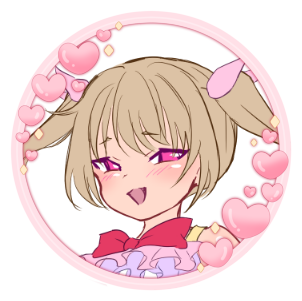
大人をからかうのが大好きな小悪魔気質だが、根はとても優しい。
誰にでも分け隔てなく接し、仲間を自然と引っ張っていく存在。
勉強もきちんとこなすしっかり者で、集中時はポニーテールに。
戦闘では直感と勢いを武器に、予測不能な動きで敵を翻弄する。"
data-image="images/character-pink.png"
>
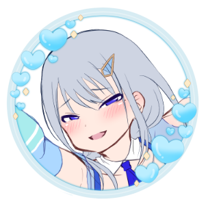
引っ込み思案で人付き合いが苦手だが、内には強い想いを秘めている。
周囲の言葉に傷つきながらも、結菜の隣に立つため彼女なりに頑張っている。
新体操で培ったしなやかな身体能力を持つ。
戦闘ではリボンを使い、拘束やサポートで仲間を支える。"
data-image="images/character-blue.png"
>
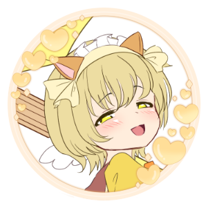
気配り上手で人当たりもよく、クラスの中心的存在。
しかしその笑顔の裏には、満たされない想いを抱えている。
小悪魔的な振る舞いで相手との距離を巧みに操る一面も。
戦闘では大胆かつパワフルなスタイルで敵を圧倒する。"
data-image="images/character-yellow.png"
>
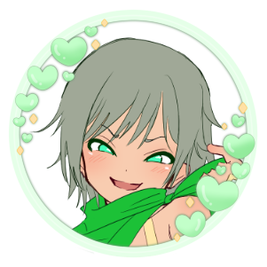
仲間と過ごす中で、ひょんなことから女装をするように。
最初は戸惑いながらも、今ではそのスリルを楽しんでいる。
明るくノリの良い性格で、場の空気を盛り上げるムードメーカー。
戦闘では軽快さと柔軟な発想で戦うトリッキーなスタイル。"
data-image="images/character-green.png"
>
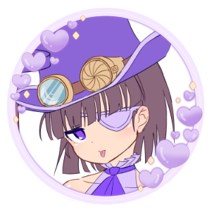
普段は周囲と距離を置くが、仲間の前では独自の世界観が炸裂する。
ゲームや創作を好むインドア派で、高い集中力を持つ。
結菜とは幼なじみで、気を許せる数少ない存在。
戦闘では冷静な判断と読みで仲間を支える司令塔。"
data-image="images/character-purple.png"
>
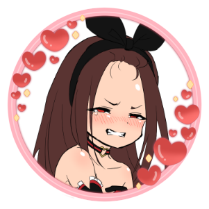
その正体は、大魔淫ヨシダの寵愛を受けた存在「クイーン・ドルチェ」。
人の心の闇を操り、淫獣を従える力を持つ。
結菜たちの正体を知りながらも、あえて距離を保ち続けている。
指揮棒を手に戦場を支配するが、変身後の姿には密かに羞恥心を抱いている。"
data-image="images/character-dolce.png"
>
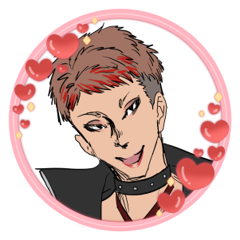
姉御肌な性格で、結菜たちを「カワイ子ちゃんたち」と呼ぶ余裕のある振る舞いが特徴。
敵幹部の中では料理を担当するなど、面倒見のいい“母”的存在。
普段は美容師として人間界に溶け込み、静かに暗躍している。
戦闘では化粧道具を駆使し、華やかかつトリッキーに相手を翻弄する。"
data-image="images/character-rose.png"
>
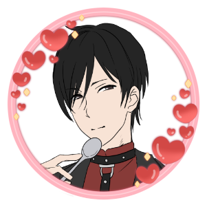
人間界では「菓子 司」と名乗り、策略によって静かに暗躍する。
普段は理知的な振る舞いを見せるが、甘いものを前にすると豹変。
凄まじい食欲を解放し、形相を崩した暴食ぶりを見せる。
スプーンから繰り出すスイーツの魔法で戦うが、どこか不憫な目にも遭いやすい。"
data-image="images/character-dessert.png"
>
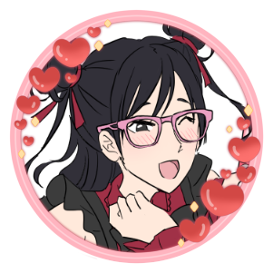
「大人になりたくない」と願いながら、子どもたちへ強い憧れを向けている。
敵幹部の中では長女的立場だが、振る舞いをよくたしなめられている。
人間界に精通し、情報収集や潜入を担う頭脳派。
ハート型のペンライトを操り、相手の行動を縛る魔法やビームで戦う。"
data-image="images/character-nineteen.png"
>
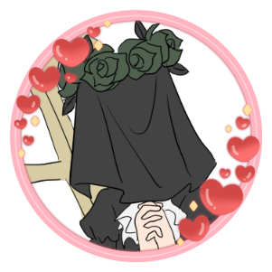
球体関節人形のような不自然な身体を持ち、顔は常に布で覆われている。
言葉少なに現れては、静かに戦場をかき乱す異質な存在。
巨大なハサミを手に、無機質で残酷な戦いを繰り広げる。"
data-image="images/character-verte.png"
>
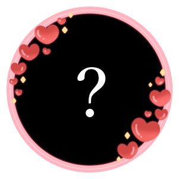
その姿も所在も不明であり、全貌を知る者はいない。
唯一、クイーン・ドルチェのみがその気配と居場所に触れることを許されている。
人の心に潜む邪な感情を糧とし、復活の時を静かに待ち続ける。
その力が完全に解き放たれた時、世界は大きく揺らぐとされている。"
data-image="images/character-yoshida.png"
>
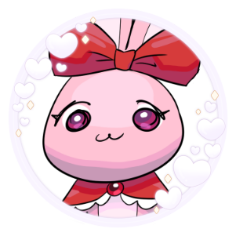
マントで空を飛び、メスガキ戦隊を導くマスコット的存在。
故郷を救うため人間界へ助けを求めに来たが、戦闘はからっきしのへっぽこ。
その代わり、空間をつなぐゲートを作る能力に長けている。
なお、故郷では“ムチモフ”な姿になるらしい。"
data-image="images/character-usagi.png"
>
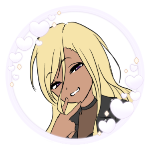
凛音は不登校で一匹狼気質だが、奈央とはネットで繋がっている。
一般人ながらも事情に通じており、独自の立場で行動している。
とらは高い戦闘力と誇りを持ち、うさぎとは距離を置く存在。
時に助言や加勢をしながら、意味深な言葉を残して去っていく。"
data-image="images/character-rion.png"
>
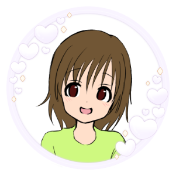
素直で明るく、誰とでもすぐに打ち解ける性格。
兄のことが大好きで、無邪気に慕っている。
メスガキ戦隊の存在を知る、数少ない一般人のひとり。"
data-image="images/character-hiyori.png"
>
厳しすぎず、かといって放任でもない、ごく普通の先生。
生徒との距離も近く、軽口を叩かれることもしばしば。
密かに結婚願望を抱いており、いい出会いを探している。"
data-image="images/character-rie.png"
>